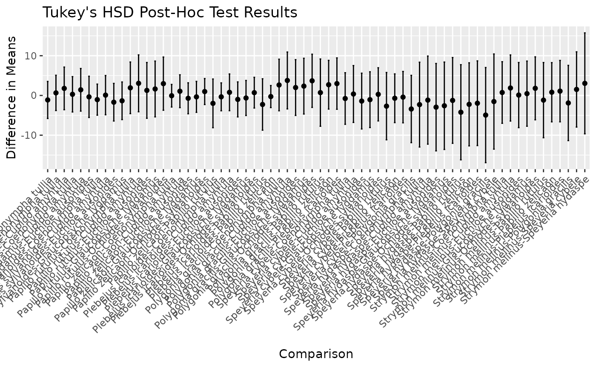

quantum.RmdIt is known that butterflies can be seen frequently in the summer time. Out of curiosity, I wanted to know which season was the best for the species of butterflies being observed in the given data set. The Quantum Compute package is meant to clean data and produce an analysis of butterfly sightings, and produce and output of what season is the best for each species being observed.
library(devtools)
#> Loading required package: usethis
devtools::install_github("sfontenot/Project_three")
#> Using GitHub PAT from the git credential store.
#> Downloading GitHub repo sfontenot/Project_three@HEAD
#> curl (5.2.3 -> 6.0.1 ) [CRAN]
#> fs (1.6.4 -> 1.6.5 ) [CRAN]
#> waldo (0.5.3 -> 0.6.1 ) [CRAN]
#> ps (1.8.0 -> 1.8.1 ) [CRAN]
#> evaluate (1.0.0 -> 1.0.1 ) [CRAN]
#> xfun (0.47 -> 0.49 ) [CRAN]
#> knitr (1.48 -> 1.49 ) [CRAN]
#> tinytex (0.53 -> 0.54 ) [CRAN]
#> fontawesome (0.5.2 -> 0.5.3 ) [CRAN]
#> rmarkdown (2.28 -> 2.29 ) [CRAN]
#> sys (3.4.2 -> 3.4.3 ) [CRAN]
#> askpass (1.2.0 -> 1.2.1 ) [CRAN]
#> httr2 (1.0.5 -> 1.0.7 ) [CRAN]
#> promises (1.3.0 -> 1.3.2 ) [CRAN]
#> later (1.3.2 -> 1.4.1 ) [CRAN]
#> credentials (2.0.1 -> 2.0.2 ) [CRAN]
#> rstudioapi (0.16.0 -> 0.17.1) [CRAN]
#> gert (2.1.2 -> 2.1.4 ) [CRAN]
#> usethis (3.0.0 -> 3.1.0 ) [CRAN]
#> Installing 19 packages: curl, fs, waldo, ps, evaluate, xfun, knitr, tinytex, fontawesome, rmarkdown, sys, askpass, httr2, promises, later, credentials, rstudioapi, gert, usethis
#> Installing packages into '/tmp/Rtmp2zsYBT/temp_libpath4f7dd8760a5'
#> (as 'lib' is unspecified)
#> ── R CMD build ─────────────────────────────────────────────────────────────────
#> * checking for file ‘/tmp/RtmpaYnvT1/remotes778851d67dd/sfontenot-Project_three-35f253c/DESCRIPTION’ ... OK
#> * preparing ‘quantum’:
#> * checking DESCRIPTION meta-information ... OK
#> * checking for LF line-endings in source and make files and shell scripts
#> * checking for empty or unneeded directories
#> * looking to see if a ‘data/datalist’ file should be added
#> * building ‘quantum_0.0.0.9000.tar.gz’
#> Warning: invalid uid value replaced by that for user 'nobody'
#> Installing package into '/tmp/Rtmp2zsYBT/temp_libpath4f7dd8760a5'
#> (as 'lib' is unspecified)
library(quantum)
#>
#> Attaching package: 'quantum'
#> The following object is masked from 'package:graphics':
#>
#> plot
#> The following object is masked from 'package:base':
#>
#> plotThe following URL need to be assigned a variable
library(tidyverse)
#> ── Attaching core tidyverse packages ──────────────────────── tidyverse 2.0.0 ──
#> ✔ dplyr 1.1.4 ✔ readr 2.1.5
#> ✔ forcats 1.0.0 ✔ stringr 1.5.1
#> ✔ ggplot2 3.5.1 ✔ tibble 3.2.1
#> ✔ lubridate 1.9.3 ✔ tidyr 1.3.1
#> ✔ purrr 1.0.2
#> ── Conflicts ────────────────────────────────────────── tidyverse_conflicts() ──
#> ✖ dplyr::filter() masks stats::filter()
#> ✖ dplyr::lag() masks stats::lag()
#> ℹ Use the conflicted package (<http://conflicted.r-lib.org/>) to force all conflicts to become errors
library(devtools)
url <- "https://raw.githubusercontent.com/sfontenot/Project_three/refs/heads/main/data/Butterly_data_by_Site.csv"
data <- read_csv(url)
#> Rows: 384 Columns: 7
#> ── Column specification ────────────────────────────────────────────────────────
#> Delimiter: ","
#> chr (2): ButterflySpecies, Site
#> dbl (5): Year, Day, Cumulative_Rain, SpringTemp, SummerTemp
#>
#> ℹ Use `spec()` to retrieve the full column specification for this data.
#> ℹ Specify the column types or set `show_col_types = FALSE` to quiet this message.
write_csv(data, "Butterly_data_by_Site.csv")This function takes only one argument, which is the file path in which the data set is stored. Assign the file path to a variable. It will clean the data of NA’s and “non-observed” values.
Example
library(tidyr)
file <- "../data/Butterly_data_by_Site.csv"
quantum::clean(file)
#> ButterflySpecies Year Day Cumulative_Rain SpringTemp SummerTemp
#> 1 Glaucopsyche lygdamus 1931 133 178.4484 6.85 15.35
#> 2 Cupido amyntula 1931 143 173.2576 6.85 15.35
#> 3 Cupido amyntula 1931 158 174.7535 6.85 15.35
#> 4 Glaucopsyche lygdamus 1931 212 172.2788 6.85 15.35
#> 5 Cupido amyntula 1933 142 177.4902 5.40 14.92
#> 6 Glaucopsyche lygdamus 1933 154 178.7462 5.40 14.92
#> 7 Glaucopsyche lygdamus 1933 156 178.8711 5.40 14.92
#> 8 Coenonympha tullia 1933 168 172.3766 5.40 14.92
#> 9 Coenonympha tullia 1937 186 179.9240 6.40 15.22
#> 10 Glaucopsyche lygdamus 1938 138 170.7959 6.78 15.77
#> 11 Glaucopsyche lygdamus 1938 141 175.4622 6.78 15.77
#> 12 Cupido amyntula 1938 141 171.4745 6.78 15.77
#> 13 Cupido amyntula 1938 143 177.6364 6.78 15.77
#> 14 Polygonia gracilis 1938 144 178.0166 6.78 15.77
#> 15 Coenonympha tullia 1938 146 179.3500 6.78 15.77
#> 18 Coenonympha tullia 1938 146 179.0895 6.78 15.77
#> 21 Coenonympha tullia 1938 146 178.7927 6.78 15.77
#> 24 Euchloe ausonides 1938 147 179.1857 6.78 15.77
#> 25 Cupido amyntula 1938 148 171.5554 6.78 15.77
#> 26 Euchloe ausonides 1938 148 177.7596 6.78 15.77
#> 27 Euchloe ausonides 1940 127 175.8669 7.70 15.75
#> 28 Plebejus icarioides 1940 141 171.3464 7.70 15.75
#> 30 Plebejus icarioides 1940 141 173.0046 7.70 15.75
#> 32 Coenonympha tullia 1940 186 174.7190 7.70 15.75
#> 33 Plebejus icarioides 1941 231 170.4459 8.05 16.39
#> 34 Papilio zelicaon 1949 190 174.3116 6.69 14.47
#> 35 Coenonympha tullia 1950 155 177.0788 4.68 15.77
#> 36 Plebejus icarioides 1950 179 177.1962 4.68 15.77
#> 37 Plebejus icarioides 1950 238 179.8041 4.68 15.77
#> 38 Euchloe ausonides 1951 160 170.3726 4.89 15.55
#> 39 Plebejus icarioides 1951 168 179.1927 4.89 15.55
#> 40 Euchloe ausonides 1951 170 174.0501 4.89 15.55
#> 41 Plebejus icarioides 1951 171 173.1867 4.89 15.55
#> 42 Plebejus icarioides 1951 172 170.0544 4.89 15.55
#> 43 Plebejus icarioides 1951 174 178.7485 4.89 15.55
#> 44 Strymon melinus 1951 207 175.3668 4.89 15.55
#> 45 Plebejus icarioides 1952 195 175.0056 5.67 14.90
#> 46 Plebejus icarioides 1952 206 172.7213 5.67 14.90
#> 47 Coenonympha tullia 1952 209 174.6930 5.67 14.90
#> 48 Plebejus icarioides 1952 224 174.8580 5.67 14.90
#> 49 Papilio zelicaon 1953 161 174.3292 6.20 14.75
#> 50 Plebejus icarioides 1953 173 174.4071 6.20 14.75
#> 51 Coenonympha tullia 1953 191 170.0336 6.20 14.75
#> 52 Coenonympha tullia 1956 123 178.3952 5.81 14.89
#> 53 Coenonympha tullia 1956 128 173.7995 5.81 14.89
#> 54 Coenonympha tullia 1956 130 170.5513 5.81 14.89
#> 55 Coenonympha tullia 1956 132 178.0478 5.81 14.89
#> 56 Coenonympha tullia 1956 134 176.3015 5.81 14.89
#> 57 Plebejus icarioides 1962 210 179.9303 5.18 14.39
#> 58 Papilio zelicaon 1962 232 179.8847 5.18 14.39
#> 59 Cupido amyntula 1966 129 170.8816 5.95 14.66
#> 60 Papilio zelicaon 1966 129 173.0823 5.95 14.66
#> 61 Plebejus icarioides 1968 218 170.5478 6.25 14.85
#> 62 Papilio zelicaon 1971 238 171.8423 5.36 15.37
#> 63 Papilio zelicaon 1973 183 179.4704 6.58 14.43
#> 64 Papilio zelicaon 1980 201 170.1857 6.93 14.53
#> 65 Papilio zelicaon 1989 142 176.7787 6.20 15.74
#> 66 Papilio zelicaon 1989 169 172.5609 6.20 15.74
#> 68 Papilio zelicaon 1989 169 178.1223 6.20 15.74
#> 70 Papilio zelicaon 1989 171 170.4636 6.20 15.74
#> 72 Papilio zelicaon 1989 171 172.7956 6.20 15.74
#> 74 Papilio zelicaon 1992 157 172.9061 7.91 16.19
#> 80 Papilio zelicaon 1992 157 174.4707 7.91 16.19
#> 86 Papilio zelicaon 1992 157 172.3244 7.91 16.19
#> 92 Papilio zelicaon 1992 157 176.0109 7.91 16.19
#> 98 Papilio zelicaon 1992 157 175.4993 7.91 16.19
#> 104 Papilio zelicaon 1992 157 179.8842 7.91 16.19
#> 110 Papilio zelicaon 1997 213 175.4789 6.27 15.48
#> 111 Papilio zelicaon 1998 120 175.2688 7.79 16.72
#> 112 Papilio zelicaon 1998 126 177.5573 7.79 16.72
#> 113 Ochlodes sylvanoides 1998 126 179.2471 7.79 16.72
#> 115 Ochlodes sylvanoides 1998 126 173.8348 7.79 16.72
#> 117 Papilio zelicaon 1998 129 178.8538 7.79 16.72
#> 118 Papilio zelicaon 1998 133 178.5211 7.79 16.72
#> 121 Papilio zelicaon 1998 133 173.6886 7.79 16.72
#> 124 Papilio zelicaon 1998 133 175.3961 7.79 16.72
#> 127 Ochlodes sylvanoides 1998 160 173.3371 7.79 16.72
#> 128 Ochlodes sylvanoides 1998 178 172.7198 7.79 16.72
#> 129 Papilio zelicaon 1999 129 170.5577 5.81 14.86
#> 130 Papilio zelicaon 1999 152 174.1180 5.81 14.86
#> 131 Papilio zelicaon 2000 153 179.8139 6.46 14.92
#> 133 Papilio zelicaon 2000 153 170.9819 6.46 14.92
#> 135 Papilio zelicaon 2000 172 171.6164 6.46 14.92
#> 137 Papilio zelicaon 2000 172 178.5208 6.46 14.92
#> 139 Papilio zelicaon 2000 244 172.6040 6.46 14.92
#> 140 Papilio zelicaon 2002 173 170.4917 4.21 15.56
#> 141 Papilio zelicaon 2002 176 173.5074 4.21 15.56
#> 142 Papilio zelicaon 2002 221 173.8775 4.21 15.56
#> 145 Papilio zelicaon 2002 221 176.5509 4.21 15.56
#> 148 Papilio zelicaon 2002 221 171.7563 4.21 15.56
#> 151 Papilio zelicaon 2002 247 172.6570 4.21 15.56
#> 152 Papilio zelicaon 2003 153 178.0665 6.03 16.21
#> 153 Papilio zelicaon 2003 179 170.2400 6.03 16.21
#> 154 Papilio zelicaon 2003 191 172.5467 6.03 16.21
#> 156 Papilio zelicaon 2003 191 172.3552 6.03 16.21
#> 158 Euchloe ausonides 2005 200 177.1767 8.03 15.43
#> 159 Euchloe ausonides 2010 168 175.7018 6.87 15.61
#> 161 Papilio zelicaon 2010 168 170.8675 6.87 15.61
#> 172 Glaucopsyche lygdamus 2010 168 173.8194 6.87 15.61
#> 173 Papilio zelicaon 2010 168 179.0063 6.87 15.61
#> 184 Euchloe ausonides 2010 168 175.0159 6.87 15.61
#> 186 Plebejus icarioides 2010 168 171.9591 6.87 15.61
#> 187 Papilio zelicaon 2010 168 179.8193 6.87 15.61
#> 198 Papilio rutulus 2010 168 176.5754 6.87 15.61
#> 199 Papilio zelicaon 2010 168 174.9832 6.87 15.61
#> 210 Papilio zelicaon 2010 168 177.9381 6.87 15.61
#> 221 Papilio zelicaon 2010 168 174.5810 6.87 15.61
#> 232 Papilio zelicaon 2010 168 176.1526 6.87 15.61
#> 243 Papilio zelicaon 2010 168 176.6029 6.87 15.61
#> 254 Papilio zelicaon 2010 168 179.9854 6.87 15.61
#> 265 Papilio zelicaon 2010 168 173.8707 6.87 15.61
#> 276 Papilio zelicaon 2010 168 170.5588 6.87 15.61
#> 287 Papilio zelicaon 2011 181 173.9896 5.23 14.86
#> 292 Papilio zelicaon 2011 181 177.4297 5.23 14.86
#> 297 Papilio rutulus 2011 181 174.6005 5.23 14.86
#> 298 Glaucopsyche lygdamus 2011 181 173.8703 5.23 14.86
#> 299 Speyeria cybele 2011 181 175.6171 5.23 14.86
#> 300 Papilio zelicaon 2011 181 179.0779 5.23 14.86
#> 305 Papilio zelicaon 2011 181 178.6618 5.23 14.86
#> 310 Coenonympha tullia 2011 181 171.3399 5.23 14.86
#> 312 Coenonympha tullia 2011 181 170.3219 5.23 14.86
#> 314 Papilio zelicaon 2011 181 176.2176 5.23 14.86
#> 319 Polygonia gracilis 2011 226 175.0016 5.23 14.86
#> 320 Plebejus icarioides 2012 170 171.3973 6.24 15.87
#> 321 Coenonympha tullia 2012 170 170.1407 6.24 15.87
#> 322 Papilio zelicaon 2012 171 170.6256 6.24 15.87
#> 326 Papilio zelicaon 2012 171 170.2637 6.24 15.87
#> 330 Papilio zelicaon 2012 171 175.8239 6.24 15.87
#> 334 Speyeria hydaspe 2012 171 172.6939 6.24 15.87
#> 335 Plebejus icarioides 2012 171 179.8840 6.24 15.87
#> 336 Ochlodes sylvanoides 2012 171 172.2220 6.24 15.87
#> 342 Ochlodes sylvanoides 2012 171 177.2253 6.24 15.87
#> 348 Ochlodes sylvanoides 2012 171 171.9065 6.24 15.87
#> 354 Speyeria cybele 2012 171 173.4970 6.24 15.87
#> 356 Speyeria cybele 2012 171 173.5664 6.24 15.87
#> 358 Polygonia gracilis 2012 171 179.8812 6.24 15.87
#> 359 Ochlodes sylvanoides 2012 171 174.7977 6.24 15.87
#> 365 Papilio zelicaon 2012 171 179.2674 6.24 15.87
#> 369 Ochlodes sylvanoides 2012 171 171.6059 6.24 15.87
#> 375 Strymon melinus 2012 171 176.1139 6.24 15.87
#> 376 Ochlodes sylvanoides 2012 171 175.7897 6.24 15.87
#> 382 Papilio rutulus 2013 132 179.5773 6.52 17.00
#> 383 Ochlodes sylvanoides 2013 195 171.2476 6.52 17.00
#> 384 Ochlodes sylvanoides 2013 221 173.4100 6.52 17.00
#> Site
#> 1 Utrecht
#> 2 Utrecht
#> 3 Utrecht
#> 4 Utrecht
#> 5 Utrecht
#> 6 Utrecht
#> 7 Utrecht
#> 8 Utrecht
#> 9 Utrecht
#> 10 Utrecht
#> 11 Utrecht
#> 12 Utrecht
#> 13 Utrecht
#> 14 Utrecht
#> 15 Utrecht
#> 18 Utrecht
#> 21 Utrecht
#> 24 Utrecht
#> 25 Utrecht
#> 26 Utrecht
#> 27 Utrecht
#> 28 Utrecht
#> 30 Utrecht
#> 32 Utrecht
#> 33 Utrecht
#> 34 Utrecht
#> 35 Utrecht
#> 36 Utrecht
#> 37 Utrecht
#> 38 Utrecht
#> 39 Utrecht
#> 40 Utrecht
#> 41 Utrecht
#> 42 Utrecht
#> 43 Utrecht
#> 44 Utrecht
#> 45 Utrecht
#> 46 Utrecht
#> 47 Utrecht
#> 48 Utrecht
#> 49 Utrecht
#> 50 Utrecht
#> 51 Utrecht
#> 52 Utrecht
#> 53 Utrecht
#> 54 Utrecht
#> 55 Utrecht
#> 56 Utrecht
#> 57 Utrecht
#> 58 Utrecht
#> 59 Utrecht
#> 60 Utrecht
#> 61 Utrecht
#> 62 Utrecht
#> 63 Utrecht
#> 64 Utrecht
#> 65 Utrecht
#> 66 Utrecht
#> 68 Utrecht
#> 70 Utrecht
#> 72 Utrecht
#> 74 Utrecht
#> 80 Utrecht
#> 86 Utrecht
#> 92 Utrecht
#> 98 Utrecht
#> 104 Utrecht
#> 110 Utrecht
#> 111 Utrecht
#> 112 Utrecht
#> 113 Utrecht
#> 115 Utrecht
#> 117 Utrecht
#> 118 Utrecht
#> 121 Utrecht
#> 124 Utrecht
#> 127 Utrecht
#> 128 Utrecht
#> 129 Utrecht
#> 130 Utrecht
#> 131 Utrecht
#> 133 Utrecht
#> 135 Utrecht
#> 137 Utrecht
#> 139 Utrecht
#> 140 Utrecht
#> 141 Utrecht
#> 142 Utrecht
#> 145 Utrecht
#> 148 Utrecht
#> 151 Utrecht
#> 152 Utrecht
#> 153 Utrecht
#> 154 Utrecht
#> 156 Utrecht
#> 158 Utrecht
#> 159 Utrecht
#> 161 Utrecht
#> 172 Utrecht
#> 173 Utrecht
#> 184 Utrecht
#> 186 Utrecht
#> 187 Utrecht
#> 198 Utrecht
#> 199 Utrecht
#> 210 Utrecht
#> 221 Utrecht
#> 232 Utrecht
#> 243 Utrecht
#> 254 Utrecht
#> 265 Utrecht
#> 276 Utrecht
#> 287 Utrecht
#> 292 Utrecht
#> 297 Utrecht
#> 298 Utrecht
#> 299 Utrecht
#> 300 Utrecht
#> 305 Utrecht
#> 310 Utrecht
#> 312 Utrecht
#> 314 Utrecht
#> 319 Utrecht
#> 320 Utrecht
#> 321 Utrecht
#> 322 Utrecht
#> 326 Utrecht
#> 330 Utrecht
#> 334 Utrecht
#> 335 Utrecht
#> 336 Utrecht
#> 342 Utrecht
#> 348 Utrecht
#> 354 Utrecht
#> 356 Utrecht
#> 358 Utrecht
#> 359 Utrecht
#> 365 Utrecht
#> 369 Utrecht
#> 375 Utrecht
#> 376 Utrecht
#> 382 Utrecht
#> 383 Utrecht
#> 384 UtrechtThis function takes two arguments and has no practical reason except that I wanted to make it. Give the file path used for the clean function, and a column in the data set. This function takes that column and divides it by two, filters that values less than 5 and returns the output of the new column.
Example
library(tidyr)
quantum::bubble(file, "Cumulative_Rain")
#> [1] ButterflySpecies Year Day Cumulative_Rain
#> [5] SpringTemp SummerTemp Site new_cal
#> <0 rows> (or 0-length row.names)
#> ButterflySpecies Year Day Cumulative_Rain SpringTemp SummerTemp
#> 1 Glaucopsyche lygdamus 1931 133 178.4484 6.85 15.35
#> 2 Cupido amyntula 1931 143 173.2576 6.85 15.35
#> 3 Cupido amyntula 1931 158 174.7535 6.85 15.35
#> 4 Glaucopsyche lygdamus 1931 212 172.2788 6.85 15.35
#> 5 Cupido amyntula 1933 142 177.4902 5.40 14.92
#> 6 Glaucopsyche lygdamus 1933 154 178.7462 5.40 14.92
#> 7 Glaucopsyche lygdamus 1933 156 178.8711 5.40 14.92
#> 8 Coenonympha tullia 1933 168 172.3766 5.40 14.92
#> 9 Coenonympha tullia 1937 186 179.9240 6.40 15.22
#> 10 Glaucopsyche lygdamus 1938 138 170.7959 6.78 15.77
#> 11 Glaucopsyche lygdamus 1938 141 175.4622 6.78 15.77
#> 12 Cupido amyntula 1938 141 171.4745 6.78 15.77
#> 13 Cupido amyntula 1938 143 177.6364 6.78 15.77
#> 14 Polygonia gracilis 1938 144 178.0166 6.78 15.77
#> 15 Coenonympha tullia 1938 146 179.3500 6.78 15.77
#> 18 Coenonympha tullia 1938 146 179.0895 6.78 15.77
#> 21 Coenonympha tullia 1938 146 178.7927 6.78 15.77
#> 24 Euchloe ausonides 1938 147 179.1857 6.78 15.77
#> 25 Cupido amyntula 1938 148 171.5554 6.78 15.77
#> 26 Euchloe ausonides 1938 148 177.7596 6.78 15.77
#> 27 Euchloe ausonides 1940 127 175.8669 7.70 15.75
#> 28 Plebejus icarioides 1940 141 171.3464 7.70 15.75
#> 30 Plebejus icarioides 1940 141 173.0046 7.70 15.75
#> 32 Coenonympha tullia 1940 186 174.7190 7.70 15.75
#> 33 Plebejus icarioides 1941 231 170.4459 8.05 16.39
#> 34 Papilio zelicaon 1949 190 174.3116 6.69 14.47
#> 35 Coenonympha tullia 1950 155 177.0788 4.68 15.77
#> 36 Plebejus icarioides 1950 179 177.1962 4.68 15.77
#> 37 Plebejus icarioides 1950 238 179.8041 4.68 15.77
#> 38 Euchloe ausonides 1951 160 170.3726 4.89 15.55
#> 39 Plebejus icarioides 1951 168 179.1927 4.89 15.55
#> 40 Euchloe ausonides 1951 170 174.0501 4.89 15.55
#> 41 Plebejus icarioides 1951 171 173.1867 4.89 15.55
#> 42 Plebejus icarioides 1951 172 170.0544 4.89 15.55
#> 43 Plebejus icarioides 1951 174 178.7485 4.89 15.55
#> 44 Strymon melinus 1951 207 175.3668 4.89 15.55
#> 45 Plebejus icarioides 1952 195 175.0056 5.67 14.90
#> 46 Plebejus icarioides 1952 206 172.7213 5.67 14.90
#> 47 Coenonympha tullia 1952 209 174.6930 5.67 14.90
#> 48 Plebejus icarioides 1952 224 174.8580 5.67 14.90
#> 49 Papilio zelicaon 1953 161 174.3292 6.20 14.75
#> 50 Plebejus icarioides 1953 173 174.4071 6.20 14.75
#> 51 Coenonympha tullia 1953 191 170.0336 6.20 14.75
#> 52 Coenonympha tullia 1956 123 178.3952 5.81 14.89
#> 53 Coenonympha tullia 1956 128 173.7995 5.81 14.89
#> 54 Coenonympha tullia 1956 130 170.5513 5.81 14.89
#> 55 Coenonympha tullia 1956 132 178.0478 5.81 14.89
#> 56 Coenonympha tullia 1956 134 176.3015 5.81 14.89
#> 57 Plebejus icarioides 1962 210 179.9303 5.18 14.39
#> 58 Papilio zelicaon 1962 232 179.8847 5.18 14.39
#> 59 Cupido amyntula 1966 129 170.8816 5.95 14.66
#> 60 Papilio zelicaon 1966 129 173.0823 5.95 14.66
#> 61 Plebejus icarioides 1968 218 170.5478 6.25 14.85
#> 62 Papilio zelicaon 1971 238 171.8423 5.36 15.37
#> 63 Papilio zelicaon 1973 183 179.4704 6.58 14.43
#> 64 Papilio zelicaon 1980 201 170.1857 6.93 14.53
#> 65 Papilio zelicaon 1989 142 176.7787 6.20 15.74
#> 66 Papilio zelicaon 1989 169 172.5609 6.20 15.74
#> 68 Papilio zelicaon 1989 169 178.1223 6.20 15.74
#> 70 Papilio zelicaon 1989 171 170.4636 6.20 15.74
#> 72 Papilio zelicaon 1989 171 172.7956 6.20 15.74
#> 74 Papilio zelicaon 1992 157 172.9061 7.91 16.19
#> 80 Papilio zelicaon 1992 157 174.4707 7.91 16.19
#> 86 Papilio zelicaon 1992 157 172.3244 7.91 16.19
#> 92 Papilio zelicaon 1992 157 176.0109 7.91 16.19
#> 98 Papilio zelicaon 1992 157 175.4993 7.91 16.19
#> 104 Papilio zelicaon 1992 157 179.8842 7.91 16.19
#> 110 Papilio zelicaon 1997 213 175.4789 6.27 15.48
#> 111 Papilio zelicaon 1998 120 175.2688 7.79 16.72
#> 112 Papilio zelicaon 1998 126 177.5573 7.79 16.72
#> 113 Ochlodes sylvanoides 1998 126 179.2471 7.79 16.72
#> 115 Ochlodes sylvanoides 1998 126 173.8348 7.79 16.72
#> 117 Papilio zelicaon 1998 129 178.8538 7.79 16.72
#> 118 Papilio zelicaon 1998 133 178.5211 7.79 16.72
#> 121 Papilio zelicaon 1998 133 173.6886 7.79 16.72
#> 124 Papilio zelicaon 1998 133 175.3961 7.79 16.72
#> 127 Ochlodes sylvanoides 1998 160 173.3371 7.79 16.72
#> 128 Ochlodes sylvanoides 1998 178 172.7198 7.79 16.72
#> 129 Papilio zelicaon 1999 129 170.5577 5.81 14.86
#> 130 Papilio zelicaon 1999 152 174.1180 5.81 14.86
#> 131 Papilio zelicaon 2000 153 179.8139 6.46 14.92
#> 133 Papilio zelicaon 2000 153 170.9819 6.46 14.92
#> 135 Papilio zelicaon 2000 172 171.6164 6.46 14.92
#> 137 Papilio zelicaon 2000 172 178.5208 6.46 14.92
#> 139 Papilio zelicaon 2000 244 172.6040 6.46 14.92
#> 140 Papilio zelicaon 2002 173 170.4917 4.21 15.56
#> 141 Papilio zelicaon 2002 176 173.5074 4.21 15.56
#> 142 Papilio zelicaon 2002 221 173.8775 4.21 15.56
#> 145 Papilio zelicaon 2002 221 176.5509 4.21 15.56
#> 148 Papilio zelicaon 2002 221 171.7563 4.21 15.56
#> 151 Papilio zelicaon 2002 247 172.6570 4.21 15.56
#> 152 Papilio zelicaon 2003 153 178.0665 6.03 16.21
#> 153 Papilio zelicaon 2003 179 170.2400 6.03 16.21
#> 154 Papilio zelicaon 2003 191 172.5467 6.03 16.21
#> 156 Papilio zelicaon 2003 191 172.3552 6.03 16.21
#> 158 Euchloe ausonides 2005 200 177.1767 8.03 15.43
#> 159 Euchloe ausonides 2010 168 175.7018 6.87 15.61
#> 161 Papilio zelicaon 2010 168 170.8675 6.87 15.61
#> 172 Glaucopsyche lygdamus 2010 168 173.8194 6.87 15.61
#> 173 Papilio zelicaon 2010 168 179.0063 6.87 15.61
#> 184 Euchloe ausonides 2010 168 175.0159 6.87 15.61
#> 186 Plebejus icarioides 2010 168 171.9591 6.87 15.61
#> 187 Papilio zelicaon 2010 168 179.8193 6.87 15.61
#> 198 Papilio rutulus 2010 168 176.5754 6.87 15.61
#> 199 Papilio zelicaon 2010 168 174.9832 6.87 15.61
#> 210 Papilio zelicaon 2010 168 177.9381 6.87 15.61
#> 221 Papilio zelicaon 2010 168 174.5810 6.87 15.61
#> 232 Papilio zelicaon 2010 168 176.1526 6.87 15.61
#> 243 Papilio zelicaon 2010 168 176.6029 6.87 15.61
#> 254 Papilio zelicaon 2010 168 179.9854 6.87 15.61
#> 265 Papilio zelicaon 2010 168 173.8707 6.87 15.61
#> 276 Papilio zelicaon 2010 168 170.5588 6.87 15.61
#> 287 Papilio zelicaon 2011 181 173.9896 5.23 14.86
#> 292 Papilio zelicaon 2011 181 177.4297 5.23 14.86
#> 297 Papilio rutulus 2011 181 174.6005 5.23 14.86
#> 298 Glaucopsyche lygdamus 2011 181 173.8703 5.23 14.86
#> 299 Speyeria cybele 2011 181 175.6171 5.23 14.86
#> 300 Papilio zelicaon 2011 181 179.0779 5.23 14.86
#> 305 Papilio zelicaon 2011 181 178.6618 5.23 14.86
#> 310 Coenonympha tullia 2011 181 171.3399 5.23 14.86
#> 312 Coenonympha tullia 2011 181 170.3219 5.23 14.86
#> 314 Papilio zelicaon 2011 181 176.2176 5.23 14.86
#> 319 Polygonia gracilis 2011 226 175.0016 5.23 14.86
#> 320 Plebejus icarioides 2012 170 171.3973 6.24 15.87
#> 321 Coenonympha tullia 2012 170 170.1407 6.24 15.87
#> 322 Papilio zelicaon 2012 171 170.6256 6.24 15.87
#> 326 Papilio zelicaon 2012 171 170.2637 6.24 15.87
#> 330 Papilio zelicaon 2012 171 175.8239 6.24 15.87
#> 334 Speyeria hydaspe 2012 171 172.6939 6.24 15.87
#> 335 Plebejus icarioides 2012 171 179.8840 6.24 15.87
#> 336 Ochlodes sylvanoides 2012 171 172.2220 6.24 15.87
#> 342 Ochlodes sylvanoides 2012 171 177.2253 6.24 15.87
#> 348 Ochlodes sylvanoides 2012 171 171.9065 6.24 15.87
#> 354 Speyeria cybele 2012 171 173.4970 6.24 15.87
#> 356 Speyeria cybele 2012 171 173.5664 6.24 15.87
#> 358 Polygonia gracilis 2012 171 179.8812 6.24 15.87
#> 359 Ochlodes sylvanoides 2012 171 174.7977 6.24 15.87
#> 365 Papilio zelicaon 2012 171 179.2674 6.24 15.87
#> 369 Ochlodes sylvanoides 2012 171 171.6059 6.24 15.87
#> 375 Strymon melinus 2012 171 176.1139 6.24 15.87
#> 376 Ochlodes sylvanoides 2012 171 175.7897 6.24 15.87
#> 382 Papilio rutulus 2013 132 179.5773 6.52 17.00
#> 383 Ochlodes sylvanoides 2013 195 171.2476 6.52 17.00
#> 384 Ochlodes sylvanoides 2013 221 173.4100 6.52 17.00
#> Site new_cal
#> 1 Utrecht 89.22419
#> 2 Utrecht 86.62880
#> 3 Utrecht 87.37673
#> 4 Utrecht 86.13940
#> 5 Utrecht 88.74511
#> 6 Utrecht 89.37310
#> 7 Utrecht 89.43553
#> 8 Utrecht 86.18831
#> 9 Utrecht 89.96201
#> 10 Utrecht 85.39794
#> 11 Utrecht 87.73111
#> 12 Utrecht 85.73726
#> 13 Utrecht 88.81821
#> 14 Utrecht 89.00830
#> 15 Utrecht 89.67502
#> 18 Utrecht 89.54473
#> 21 Utrecht 89.39637
#> 24 Utrecht 89.59287
#> 25 Utrecht 85.77771
#> 26 Utrecht 88.87982
#> 27 Utrecht 87.93347
#> 28 Utrecht 85.67321
#> 30 Utrecht 86.50231
#> 32 Utrecht 87.35951
#> 33 Utrecht 85.22296
#> 34 Utrecht 87.15579
#> 35 Utrecht 88.53940
#> 36 Utrecht 88.59812
#> 37 Utrecht 89.90205
#> 38 Utrecht 85.18632
#> 39 Utrecht 89.59637
#> 40 Utrecht 87.02503
#> 41 Utrecht 86.59337
#> 42 Utrecht 85.02719
#> 43 Utrecht 89.37424
#> 44 Utrecht 87.68338
#> 45 Utrecht 87.50278
#> 46 Utrecht 86.36067
#> 47 Utrecht 87.34648
#> 48 Utrecht 87.42902
#> 49 Utrecht 87.16461
#> 50 Utrecht 87.20354
#> 51 Utrecht 85.01681
#> 52 Utrecht 89.19762
#> 53 Utrecht 86.89974
#> 54 Utrecht 85.27563
#> 55 Utrecht 89.02389
#> 56 Utrecht 88.15076
#> 57 Utrecht 89.96514
#> 58 Utrecht 89.94234
#> 59 Utrecht 85.44079
#> 60 Utrecht 86.54113
#> 61 Utrecht 85.27389
#> 62 Utrecht 85.92115
#> 63 Utrecht 89.73518
#> 64 Utrecht 85.09285
#> 65 Utrecht 88.38936
#> 66 Utrecht 86.28043
#> 68 Utrecht 89.06114
#> 70 Utrecht 85.23182
#> 72 Utrecht 86.39781
#> 74 Utrecht 86.45307
#> 80 Utrecht 87.23537
#> 86 Utrecht 86.16218
#> 92 Utrecht 88.00543
#> 98 Utrecht 87.74964
#> 104 Utrecht 89.94210
#> 110 Utrecht 87.73946
#> 111 Utrecht 87.63438
#> 112 Utrecht 88.77863
#> 113 Utrecht 89.62355
#> 115 Utrecht 86.91738
#> 117 Utrecht 89.42689
#> 118 Utrecht 89.26053
#> 121 Utrecht 86.84431
#> 124 Utrecht 87.69807
#> 127 Utrecht 86.66856
#> 128 Utrecht 86.35988
#> 129 Utrecht 85.27885
#> 130 Utrecht 87.05902
#> 131 Utrecht 89.90694
#> 133 Utrecht 85.49093
#> 135 Utrecht 85.80819
#> 137 Utrecht 89.26040
#> 139 Utrecht 86.30199
#> 140 Utrecht 85.24585
#> 141 Utrecht 86.75370
#> 142 Utrecht 86.93873
#> 145 Utrecht 88.27544
#> 148 Utrecht 85.87815
#> 151 Utrecht 86.32850
#> 152 Utrecht 89.03325
#> 153 Utrecht 85.12002
#> 154 Utrecht 86.27337
#> 156 Utrecht 86.17761
#> 158 Utrecht 88.58837
#> 159 Utrecht 87.85089
#> 161 Utrecht 85.43377
#> 172 Utrecht 86.90971
#> 173 Utrecht 89.50315
#> 184 Utrecht 87.50797
#> 186 Utrecht 85.97956
#> 187 Utrecht 89.90966
#> 198 Utrecht 88.28770
#> 199 Utrecht 87.49161
#> 210 Utrecht 88.96904
#> 221 Utrecht 87.29050
#> 232 Utrecht 88.07628
#> 243 Utrecht 88.30145
#> 254 Utrecht 89.99270
#> 265 Utrecht 86.93534
#> 276 Utrecht 85.27940
#> 287 Utrecht 86.99481
#> 292 Utrecht 88.71485
#> 297 Utrecht 87.30024
#> 298 Utrecht 86.93515
#> 299 Utrecht 87.80857
#> 300 Utrecht 89.53896
#> 305 Utrecht 89.33088
#> 310 Utrecht 85.66993
#> 312 Utrecht 85.16093
#> 314 Utrecht 88.10882
#> 319 Utrecht 87.50082
#> 320 Utrecht 85.69867
#> 321 Utrecht 85.07034
#> 322 Utrecht 85.31280
#> 326 Utrecht 85.13185
#> 330 Utrecht 87.91193
#> 334 Utrecht 86.34694
#> 335 Utrecht 89.94202
#> 336 Utrecht 86.11101
#> 342 Utrecht 88.61264
#> 348 Utrecht 85.95327
#> 354 Utrecht 86.74848
#> 356 Utrecht 86.78320
#> 358 Utrecht 89.94061
#> 359 Utrecht 87.39886
#> 365 Utrecht 89.63372
#> 369 Utrecht 85.80297
#> 375 Utrecht 88.05693
#> 376 Utrecht 87.89484
#> 382 Utrecht 89.78863
#> 383 Utrecht 85.62380
#> 384 Utrecht 86.70502This function takes the data set and presents the average temperatures of the spring and summer season. Based on species, the values returned will prove that butterflies prefer the warmer weather by printing “best season”.
This function takes one argument. The file path
Example
library(tidyr)
quantum::season(file)
#> # A tibble: 12 × 4
#> ButterflySpecies Avg_SpringTemp Avg_SummerTemp Better_Season
#> <fct> <dbl> <dbl> <chr>
#> 1 Coenonympha tullia 6.01 15.2 Summer
#> 2 Cupido amyntula 6.48 15.4 Summer
#> 3 Euchloe ausonides 6.60 15.6 Summer
#> 4 Glaucopsyche lygdamus 6.27 15.3 Summer
#> 5 Ochlodes sylvanoides 6.80 16.3 Summer
#> 6 Papilio rutulus 6.21 15.8 Summer
#> 7 Papilio zelicaon 6.36 15.6 Summer
#> 8 Plebejus icarioides 5.91 15.4 Summer
#> 9 Polygonia gracilis 6.08 15.5 Summer
#> 10 Speyeria cybele 5.90 15.5 Summer
#> 11 Speyeria hydaspe 6.24 15.9 Summer
#> 12 Strymon melinus 5.56 15.7 SummerThis function is meant to take the cleaned data set and perform an ANOVA to determine if there is any statistical difference in the sightings of different species in rainfall. The Tukey’s HSD Post-Hoc Test is meant to be performed if the ANOVA shows a big enough difference. The test is meant to single out which species differ from each other. Visualization
This function takes three arguments.
the file_path, species_col, rain_col.
Example
library(ggplot2)
quantum::ANOVA(file, "ButterflySpecies", "Cumulative_Rain")
#> Df Sum Sq Mean Sq F value Pr(>F)
#> ButterflySpecies 11 67.6 6.149 0.634 0.797
#> Residuals 132 1280.7 9.702
#> Tukey multiple comparisons of means
#> 95% family-wise confidence level
#>
#> Fit: aov(formula = as.formula(paste(rain_col, "~", species_col)), data = data)
#>
#> $ButterflySpecies
#> diff lwr upr
#> Cupido amyntula-Coenonympha tullia -1.13317949 -5.787864 3.521505
#> Euchloe ausonides-Coenonympha tullia 0.64383612 -3.800007 5.087679
#> Glaucopsyche lygdamus-Coenonympha tullia 0.28918185 -4.154661 4.733025
#> Ochlodes sylvanoides-Coenonympha tullia -1.05205120 -4.959939 2.855836
#> Papilio rutulus-Coenonympha tullia 1.92036102 -4.570287 8.411009
#> Papilio zelicaon-Coenonympha tullia -0.06715282 -2.904754 2.770448
#> Plebejus icarioides-Coenonympha tullia -0.34789176 -3.853242 3.157459
#> Polygonia gracilis-Coenonympha tullia 2.63580472 -3.854843 9.126452
#> Speyeria cybele-Coenonympha tullia -0.77051951 -7.261167 5.720128
#> Speyeria hydaspe-Coenonympha tullia -2.30347165 -12.968694 8.361751
#> Strymon melinus-Coenonympha tullia 0.74295645 -7.005148 8.491061
#> Euchloe ausonides-Cupido amyntula 1.77701561 -3.587243 7.141275
#> Glaucopsyche lygdamus-Cupido amyntula 1.42236134 -3.941898 6.786620
#> Ochlodes sylvanoides-Cupido amyntula 0.08112829 -4.848286 5.010542
#> Papilio rutulus-Cupido amyntula 3.05354051 -4.098805 10.205886
#> Papilio zelicaon-Cupido amyntula 1.06602667 -3.066711 5.198764
#> Plebejus icarioides-Cupido amyntula 0.78528773 -3.831531 5.402107
#> Polygonia gracilis-Cupido amyntula 3.76898421 -3.383361 10.921330
#> Speyeria cybele-Cupido amyntula 0.36265998 -6.789685 7.515005
#> Speyeria hydaspe-Cupido amyntula -1.17029216 -12.250658 9.910074
#> Strymon melinus-Cupido amyntula 1.87613594 -6.434138 10.186410
#> Glaucopsyche lygdamus-Euchloe ausonides -0.35465426 -5.537021 4.827712
#> Ochlodes sylvanoides-Euchloe ausonides -1.69588731 -6.426719 3.034944
#> Papilio rutulus-Euchloe ausonides 1.27652490 -5.740433 8.293482
#> Papilio zelicaon-Euchloe ausonides -0.71098894 -4.604723 3.182745
#> Plebejus icarioides-Euchloe ausonides -0.99172788 -5.395893 3.412437
#> Polygonia gracilis-Euchloe ausonides 1.99196860 -5.024989 9.008926
#> Speyeria cybele-Euchloe ausonides -1.41435563 -8.431313 5.602602
#> Speyeria hydaspe-Euchloe ausonides -2.94730776 -13.940767 8.046152
#> Strymon melinus-Euchloe ausonides 0.09912034 -8.094921 8.293161
#> Ochlodes sylvanoides-Glaucopsyche lygdamus -1.34123305 -6.072065 3.389599
#> Papilio rutulus-Glaucopsyche lygdamus 1.63117917 -5.385778 8.648137
#> Papilio zelicaon-Glaucopsyche lygdamus -0.35633467 -4.250069 3.537400
#> Plebejus icarioides-Glaucopsyche lygdamus -0.63707362 -5.041238 3.767091
#> Polygonia gracilis-Glaucopsyche lygdamus 2.34662287 -4.670335 9.363580
#> Speyeria cybele-Glaucopsyche lygdamus -1.05970137 -8.076659 5.957256
#> Speyeria hydaspe-Glaucopsyche lygdamus -2.59265350 -13.586113 8.400806
#> Strymon melinus-Glaucopsyche lygdamus 0.45377460 -7.740266 8.647816
#> Papilio rutulus-Ochlodes sylvanoides 2.97241222 -3.717994 9.662819
#> Papilio zelicaon-Ochlodes sylvanoides 0.98489838 -2.283895 4.253692
#> Plebejus icarioides-Ochlodes sylvanoides 0.70415943 -3.158549 4.566867
#> Polygonia gracilis-Ochlodes sylvanoides 3.68785592 -3.002551 10.378262
#> Speyeria cybele-Ochlodes sylvanoides 0.28153168 -6.408875 6.971938
#> Speyeria hydaspe-Ochlodes sylvanoides -1.25142045 -12.039377 9.536536
#> Strymon melinus-Ochlodes sylvanoides 1.79500765 -6.121188 9.711203
#> Papilio zelicaon-Papilio rutulus -1.98751384 -8.114661 4.139634
#> Plebejus icarioides-Papilio rutulus -2.26825278 -8.731799 4.195294
#> Polygonia gracilis-Papilio rutulus 0.71544370 -7.747325 9.178213
#> Speyeria cybele-Papilio rutulus -2.69088053 -11.153650 5.771889
#> Speyeria hydaspe-Papilio rutulus -4.22383267 -16.191996 7.744330
#> Strymon melinus-Papilio rutulus -1.17740457 -10.639068 8.284259
#> Plebejus icarioides-Papilio zelicaon -0.28073894 -3.055790 2.494312
#> Polygonia gracilis-Papilio zelicaon 2.70295754 -3.424190 8.830105
#> Speyeria cybele-Papilio zelicaon -0.70336669 -6.830514 5.423781
#> Speyeria hydaspe-Papilio zelicaon -2.23631883 -12.684304 8.211666
#> Strymon melinus-Papilio zelicaon 0.81010927 -6.636135 8.256353
#> Polygonia gracilis-Plebejus icarioides 2.98369648 -3.479850 9.447243
#> Speyeria cybele-Plebejus icarioides -0.42262775 -6.886174 6.040919
#> Speyeria hydaspe-Plebejus icarioides -1.95557988 -12.604331 8.693171
#> Strymon melinus-Plebejus icarioides 1.09084822 -6.634568 8.816264
#> Speyeria cybele-Polygonia gracilis -3.40632423 -11.869093 5.056445
#> Speyeria hydaspe-Polygonia gracilis -4.93927637 -16.907439 7.028887
#> Strymon melinus-Polygonia gracilis -1.89284827 -11.354512 7.568815
#> Speyeria hydaspe-Speyeria cybele -1.53295213 -13.501115 10.435211
#> Strymon melinus-Speyeria cybele 1.51347597 -7.948188 10.975140
#> Strymon melinus-Speyeria hydaspe 3.04642810 -9.647726 15.740582
#> p adj
#> Cupido amyntula-Coenonympha tullia 0.9996390
#> Euchloe ausonides-Coenonympha tullia 0.9999981
#> Glaucopsyche lygdamus-Coenonympha tullia 1.0000000
#> Ochlodes sylvanoides-Coenonympha tullia 0.9990689
#> Papilio rutulus-Coenonympha tullia 0.9978012
#> Papilio zelicaon-Coenonympha tullia 1.0000000
#> Plebejus icarioides-Coenonympha tullia 1.0000000
#> Polygonia gracilis-Coenonympha tullia 0.9703400
#> Speyeria cybele-Coenonympha tullia 0.9999998
#> Speyeria hydaspe-Coenonympha tullia 0.9998872
#> Strymon melinus-Coenonympha tullia 1.0000000
#> Euchloe ausonides-Cupido amyntula 0.9941191
#> Glaucopsyche lygdamus-Cupido amyntula 0.9991914
#> Ochlodes sylvanoides-Cupido amyntula 1.0000000
#> Papilio rutulus-Cupido amyntula 0.9574376
#> Papilio zelicaon-Cupido amyntula 0.9993752
#> Plebejus icarioides-Cupido amyntula 0.9999898
#> Polygonia gracilis-Cupido amyntula 0.8394605
#> Speyeria cybele-Cupido amyntula 1.0000000
#> Speyeria hydaspe-Cupido amyntula 0.9999999
#> Strymon melinus-Cupido amyntula 0.9998258
#> Glaucopsyche lygdamus-Euchloe ausonides 1.0000000
#> Ochlodes sylvanoides-Euchloe ausonides 0.9887005
#> Papilio rutulus-Euchloe ausonides 0.9999798
#> Papilio zelicaon-Euchloe ausonides 0.9999790
#> Plebejus icarioides-Euchloe ausonides 0.9998301
#> Polygonia gracilis-Euchloe ausonides 0.9984851
#> Speyeria cybele-Euchloe ausonides 0.9999432
#> Speyeria hydaspe-Euchloe ausonides 0.9991041
#> Strymon melinus-Euchloe ausonides 1.0000000
#> Ochlodes sylvanoides-Glaucopsyche lygdamus 0.9985030
#> Papilio rutulus-Glaucopsyche lygdamus 0.9997685
#> Papilio zelicaon-Glaucopsyche lygdamus 1.0000000
#> Plebejus icarioides-Glaucopsyche lygdamus 0.9999981
#> Polygonia gracilis-Glaucopsyche lygdamus 0.9936297
#> Speyeria cybele-Glaucopsyche lygdamus 0.9999970
#> Speyeria hydaspe-Glaucopsyche lygdamus 0.9997339
#> Strymon melinus-Glaucopsyche lygdamus 1.0000000
#> Papilio rutulus-Ochlodes sylvanoides 0.9439165
#> Papilio zelicaon-Ochlodes sylvanoides 0.9974144
#> Plebejus icarioides-Ochlodes sylvanoides 0.9999794
#> Polygonia gracilis-Ochlodes sylvanoides 0.7961245
#> Speyeria cybele-Ochlodes sylvanoides 1.0000000
#> Speyeria hydaspe-Ochlodes sylvanoides 0.9999998
#> Strymon melinus-Ochlodes sylvanoides 0.9998182
#> Papilio zelicaon-Papilio rutulus 0.9950823
#> Plebejus icarioides-Papilio rutulus 0.9904957
#> Polygonia gracilis-Papilio rutulus 1.0000000
#> Speyeria cybele-Papilio rutulus 0.9958580
#> Speyeria hydaspe-Papilio rutulus 0.9900456
#> Strymon melinus-Papilio rutulus 0.9999996
#> Plebejus icarioides-Papilio zelicaon 1.0000000
#> Polygonia gracilis-Papilio zelicaon 0.9465587
#> Speyeria cybele-Papilio zelicaon 0.9999998
#> Speyeria hydaspe-Papilio zelicaon 0.9998968
#> Strymon melinus-Papilio zelicaon 0.9999999
#> Polygonia gracilis-Plebejus icarioides 0.9276393
#> Speyeria cybele-Plebejus icarioides 1.0000000
#> Speyeria hydaspe-Plebejus icarioides 0.9999778
#> Strymon melinus-Plebejus icarioides 0.9999985
#> Speyeria cybele-Polygonia gracilis 0.9722247
#> Speyeria hydaspe-Polygonia gracilis 0.9666168
#> Strymon melinus-Polygonia gracilis 0.9999473
#> Speyeria hydaspe-Speyeria cybele 0.9999995
#> Strymon melinus-Speyeria cybele 0.9999946
#> Strymon melinus-Speyeria hydaspe 0.9996853